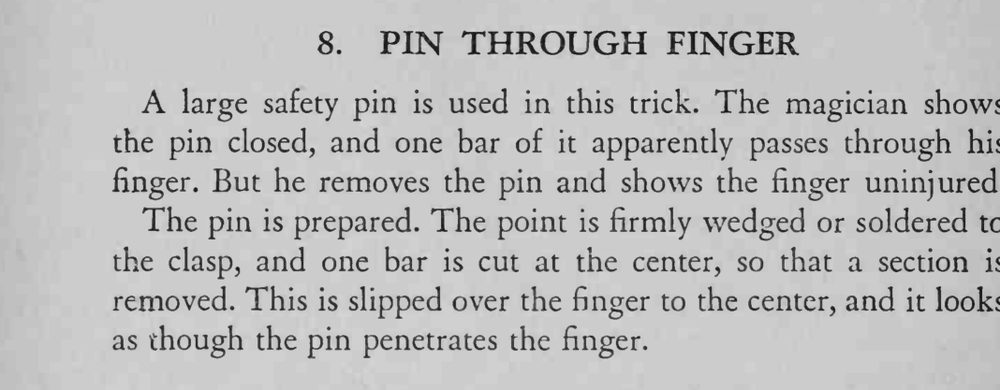

一枚合上的安全别针看似穿过手指，取下来后手指却完好无伤。
缺口要刚好套过手指，展示时选正面角度。

A large safety pin is used in this trick. The magician shows the pin closed, and one bar of it apparently passes through his finger. But he removes the pin and shows the finger uninjured. The pin is prepared. The point is firmly wedged or soldered to the clasp, and one bar is cut at the center, so that a section is removed. This is slipped over the finger to the center, and it looks as though the pin penetrates the finger.